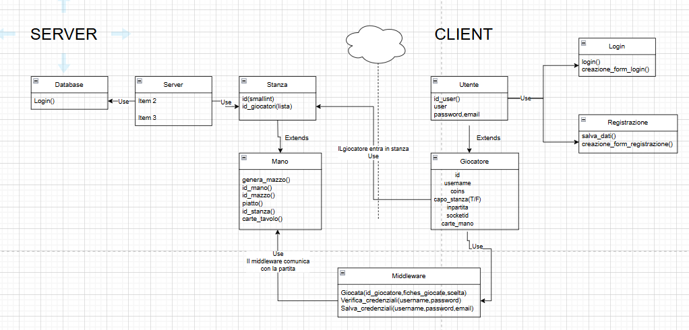

Documentazione
Poker texas hold’em
Realizzazione di un gioco, il poker, con la possibilità di registrare gli utenti, giocare dentro a sale create da un giocatore, con il salvataggio di un punteggio
- Classe/Anno: 5B Inf - 24/25
- Author: Baez, Bayoumy, Palmieri, Prostoiu
- Creato: 10 aprile 2025
- Ultima modifica: 16 aprile 2025
Architettura informazione
Login
└── Lobby
├── Crea Stanza
├── Unisciti a Stanza
│ └── Inserisci Codice
└── Stanza
├── Attendi Giocatori (2-6)
├── Avvia Partita (solo creatore)
└── Abbandona
├── Se creatore → elimina stanza
└── Giocatori → tornano alla lobby
├── Se giocatore → rientra in lobby
└── Fold automatico nel gioco (anche se creatore)
└── Gestione turni passa al secondo entrato ( se abbandona creatore)
└── Partita
├── Pre-flop
├── Flop
├── Turn
├── River
├── Showdown
└── Fine partita → ritorno alla stanza

UML
Ecco i vari diagrammi UML
Diagramma di Casi d'uso
Solo se l'utente è registrato
[Nuovo Utente]
└──> Registrarsi
[Utente Registrato - Player]
├──> Accedere al sistema (Login)
├──> Unirsi a una stanza
└── Inserire codice stanza
├──> Abbandonare la stanza
└── Ritorno alla lobby
├──> Partecipare alla partita (Dopo che il creatore la fa partire)
├── Ricevere carte da gioco
├── Visualizzare carte comuni
├── Eseguire azione (Fold, Call, Raise, Check,puntata libera)
└── Mostrare carte allo showdown
└──> Abbandonare partita
└── Fold automatico
[Utente Registrato - Creatore Stanza]
├──> Accedere al sistema (Login)
├──> Creare una stanza
├──> Avviare partita
├──> Gestire turni (dealer, blinds, ordine)
├──> Abbandonare stanza
├── Passaggio comando al secondo entrato
└── Fold automatico se in partita
└──> Fine partita
└── Ritorno alla stanza
Diagrammi di oggetti
Diagrammi di Stato


Diagrammi di Sequenza


Contenuti del progetto
Il progetto consiste nel gioco da tavolo POKER, nella sua versione texas hold’em. Nella prima schermata si presenta un login, dei quali i dati sono salvati in remoto su un server, una volta effettuato con successo l’accesso il giocatore può scegliere se creare una stanza o unirsi ad una già esistente utilizzando un codice e quando poi si ha una stanza con almeno due giocatori (e ad un massimo di 6) il creatore della stanza può far iniziare la partita (gli altri giocatori non possono). Se il creatore della stanza la abbandona prematuramente, il comando passa al secondo entrato nella stanza. Una volta dentro si presenta la schermata del gioco, In questa versione del gioco, ogni partecipante riceve due carte coperte personali, chiamate hole cards, e condivide cinque carte comuni, distribuite scoperte al centro del tavolo. L’obiettivo è formare la migliore combinazione possibile di cinque carte, utilizzando una qualunque combinazione tra le proprie due carte e le carte comuni, al fine di vincere il piatto (pot), cioè l’insieme delle puntate effettuate dai giocatori. Una partita si svolge in diverse fasi. Prima di tutto, viene assegnato il dealer button, che ruota in senso orario dopo ogni mano e determina l’ordine di distribuzione delle carte e delle puntate. I due giocatori alla sinistra del dealer sono obbligati a versare rispettivamente lo small blind e il big blind, due puntate iniziali forzate che servono a creare azione nel piatto. Dopo i bui, inizia la distribuzione delle carte: ogni giocatore riceve due carte personali coperte. A questo punto parte il primo giro di puntate, detto pre-flop. I giocatori, a partire da quello alla sinistra del big blind, possono scegliere se passare la mano (fold), vedere la puntata (call) o rilanciare (raise), se vedere le carte senza puntare(check), puntata libera maggiore maggiore dell'ultima puntata. Segue poi la fase del flop, in cui vengono scoperte le prime tre carte comuni al centro del tavolo. Dopo un secondo giro di puntate, si scopre la quarta carta comune, chiamata turn, seguita da un terzo giro di puntate. Infine viene rivelata la quinta e ultima carta comune, il river, che dà inizio all’ultimo giro di puntate. Se al termine del river ci sono ancora più giocatori in gioco, si arriva allo showdown: ognuno mostra le proprie carte, e vince chi ha la combinazione più alta tra le classiche mani del poker, come coppia, doppia coppia, tris, scala, colore, full, poker, scala colore e scala reale. In alternativa, un giocatore può vincere prima dello showdown, costringendo tutti gli avversari a lasciare la mano attraverso un bluff ben piazzato o una puntata aggressiva. Durante ogni fase, i giocatori possono scegliere tra diverse azioni strategiche: check (passare la parola senza puntare), call (vedere la puntata), raise (rilanciare) o fold (ritirarsi). L’andamento dei turni viene gestito dal creatore della stanza (o da chi gli succede in caso di abbandono). Una volta terminata la partita si ritorna alla schermata della stanza con i giocatori già dentro. Se un giocatore abbandona la partita durante essa, al suo turno verrà eseguito un Fold.
Wireframes


Il progetto
Per ora non sono presenti credenziali
Link al progetto
Link al progettoLink al powerpoint